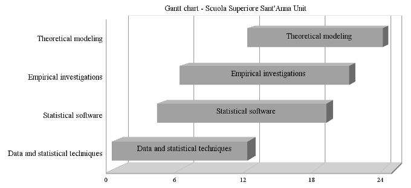
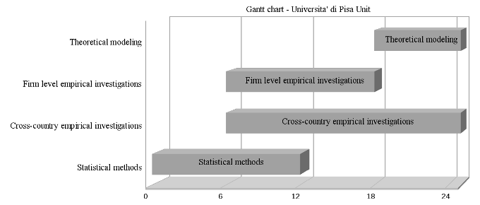
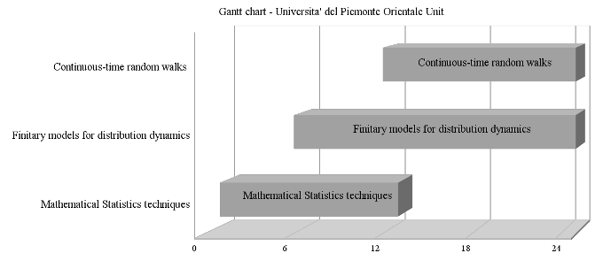

The growth of firms and countries
Table of Contents
Abstract
This project studies the distributional properties of economic growth, at the level of firms, sectors or entire economies, in a broader perspective than the one typically adopted in economic studies. We will do that through the development of statistical tools, empirical investigations and a coordinated, phenomenologically-driven, theorizing effort.
The traditional analysis of economic growth, and its relation with the diverse aspects of the economic system, is based on measures of central tendency, that is "averages". We are used to compare the competitiveness of sectors or countries by looking at their differences in average growth rates, or to asses the effect of a given policy by looking at its impact on aggregate productivity, defined as the weighted mean of the productivity of single units.
Conversely, a better description of the growth dynamics characterizing the economic systems, and a clearer investigation of the relationships existing between the diverse aspects of this growth process, can be achieved by looking at the properties of the entire distribution.
From a theoretical point of view, our approach replaces the traditional notion of economic equilibrium, seen as an optimal outcome deriving from more or less decentralized planning activities, with the notion of statistical equilibrium, generated by the interaction among many agents. In this approach the observed distributional heterogeneity is not merely considered as the result of a noisy environment, but as an emerging phenomenon, whose properties can be fruitfully investigated to infer the mechanisms of the underlying economic dynamics which, in turn, provide precise constraints to the possible modeling efforts.
The main challenge ahead is to move from the traditional investigation of unconditional "stylized facts", toward a more structured approach allowing to identify the determinants of the observed empirical regularities. Econometric models must be appropriately designed to this purpose, and descriptive investigations have to be replaced with precise hypothesis and reliable validation tools. The observed regularities, once appropriately described, will shape the boundaries for the formulation of models, which are indeed constrained to both incorporate and be able to reproduce them.
Inside this broadly defined research agenda, the project is built along three main activities, intended to exploit the interdisciplinary nature of the project.
The first activity concerns the investigation of the statistical properties of growth rates, both from a micro (firms) and a macro perspective (sectors and countries). We will focus on distributional aspects, like the presence of fat-tails, asymmetries and multi-modality. The interdisciplinary background of the unit members will provide the necessary skills to go beyond the technical toolkit typically employed in economics, allowing for an intensive use of existing non-linear and non-parametric methods, and also enabling us to derive new estimators suited for distributional analysis.
The second activity concerns the identification of the determinants of the observed distributional properties. At the macroeconomic level, the aim is to study the determinants of the entire growth distribution, across countries and across regions, extending the still limited body of literature which merely look at aggregate volatility. From a micro perspective we will investigate the possible determinants of long and short run industrial performances, respectively captured by the size of the firm and its growth rate. Traditional studies look at the unconditional distribution of these variables. However, industrial evolution is essentially a matter of economic selection on firms' characteristics and performance. Thus, we will explore how growth relates with the availability and cost of capital, with technical productivity and operating profitability, the latter being the natural fitness measure on the competitive landscape.
Finally, these empirical efforts will be exploited in the third line of activity, which concerns the formulation of new models of growth. The goal is to enhance the economic content of existing models, including aspects related to structural relationships among firm performances, financing problems, and policy regimes affecting selection and competition dynamics. The modeling effort is based on the analytical tools developed by the units, sharing the common purpose to design suitable stochastic models for both discrete and continuous time dynamics.
A final key ingredient of the project is the availability of large and rich datasets. These meet the intensive data requirements of the methods which we plan to apply and also allow to pursue international comparisons of the observed statistical regularities.
Final objectives
The past few years have seen a reflourishing of empirical research aimed at the identification of the statistical regularities of the dynamics of firm growth and, more generally, of the microeconomic mechanisms underlying aggregate dynamics.
The increased availability of large databases has significantly enhanced the possibility of detecting robust empirical properties. Exploiting this possibility, our aim is to derive novel evidence through the development and refinement of the statistical tools employed for empirical analysis. New data and new statistical methods together contribute to the theoretical advancement, shaping the formulation of new models which have to account for the newly discovered empirical regularities. The project will therefore integrate the capabilities and the experience of each research unit, developing an interdisciplinary research plan which can fruitfully combine statistical methodologies, empirical analysis and theoretical models. Within this plan, the project pursues several complementary objectives:
Objective 1: Refinement and extension of statistical methods
New data and the search of empirical regularities require the extension of the traditional statistical tool kit of economists. We plan to develop and refine a series of statistical methods for the study of the distribution of growth rates, particularly suitable in handling properties such as non-gaussianities and non-linearities. Parametric method of interest concern the development of novel families of densities and densities mixtures for the characterization of the distributional properties and the analysis of their homogeneity in cross-section. Non-parametric methods will encompass the analysis of extremal behaviour of the distribution (tail indexes), multi-variate kernel estimation and stochastic matrix theory, allowing to condition the analysis of growth distributions on a set of explanatory factors, both at the micro and the macro level. The development of appropriate statistical models, like linear or mixture models, will allow for the inclusion of more independent variables, the description of complex structures and the analysis of dynamical models in the study of the empirical transition matrices, together with the validation of discrete Markov models.
Objective 2: Empirical analysis of growth distributions
Also exploiting the tools mentioned in Objective 1, we aim at producing new empirical evidence concerning the determinants of the distribution and dynamics of growth rates. Broadly speaking, this objective is made of two related lines of investigations which will be pursued in parallel.
First, extending previous works by project members, we will statistically characterize the distribution of micro variables (firm size and firms growth rates). We will apply parametric and non-parametric techniques to the estimation of tail behaviour and analyze the goodness of fit of several density mixtures. Robustness of results will be checked with respect to different methods, different units of analysis, different proxies of the variables under study and different aggregation levels. Then we will try to relate differences in observed regularities to the different features of firm structure and performance which play a key role in shaping selection and reallocation dynamics, ultimately driving the patterns of aggregate growth. Variables to be considered are indicators of firms' fitness, namely productivity and profitability. A proper account of these dynamics naturally brings to consider the interplay of industrial and financial dimensions of firms' operation, in turn requiring the inclusion of investment decisions and capital availability and cost into the analysis.
Second, taking a macro perspective, we build upon recent studies focusing on statistical characterization and explanation of aggregate volatility, at country, sector or regional level. Moving along these lines, we want to explore if and to what extent the different explanatory factors proposed in the literature affect the conditional distributions, rather than the mere standard deviation of growth. This implies moving from a time series to a cross-sectional perspective on growth distributions, changing the usual perspective followed in previous studies. Few attempts exists, but do not seek to explain the observed facts on the basis of explanatory variables. We will instead look at four driving factors identified as determinant of aggregate volatility, namely geographical characteristics, quality of institutions, trade openness and financial development. We then plan to extend the analysis by considering the determinants of output growth at the level of European regions. This will allow for the inclusion of an intermediate level of aggregation. In particular, we will condition the dynamics of regional growth to the evolution of industrial structures and the synchronization of business cycles, connected to the adoption of the European monetary union.
Objective 3: Formulation of new theoretical models
One goal is to enhance the economic content of existing models of stochastic growth, via the incorporation features which might explain the distributional properties of firm-industry dynamics. In order to reach this goal, modeling efforts should work in two directions: include a proper accounting of short vs long term properties, via the accumulation of growth opportunities, and provide a channel trough which market selection and financing policies affect structure and performance of productive units. Continuous time random-walks will constitute the main modeling tool. We will build on past analytical and numerical results obtained by the members of the project, departing from simple, single-variable, Gibrat-like Poisson process, to include a competition dimension between the economic units. As already proved by several papers, the notion of persistence and capabilities, economies of scale and scope, and externality can be easily accommodated inside the general family of random walks subordinated to non-trivial counting processes, such as the Yule and Mittag-Leffler ones.
Objective 4: Construction, extensions and harmonization of micro datasets
The empirical analysis and the validation of models require to combine different types of information on micro units (for firms, this means financial statements data and information on their internal structure). This information, moreover, should be available for different countries, to allow for a comparison of result across different institutional settings, and over a sufficiently long period of time, so as to link short vs long term dynamics and determinants of growth. One goal is therefore to extend the already available data on firm financial statements through the inclusion of new sectors (service in particular) and more recent years as compared to analysis performed in the past, and through linking accounting data with other kind of sources. Further, in order to produce an homogeneous database, we will perform an harmonization of data covering different countries.
State of the Art
As discussed, this project tries to tackle, from different perspectives, the problem of economic growth considering both empirical and theoretical aspects. As a consequence, it is rooted in different strands of research and concerns several inter-connected lines of investigation.
First of all, it builds on the vast body of empirical research in Industrial Economics about stylised facts on firms' size-growth dynamics. This literature has traditionally investigated two properties of firms behaviour: the firm size distribution and the autoregressive structure of growth dynamics. Concerning the former, the general finding is the presence of strong distributional asymmetries, which suggests the co-existence of productive units characterized by extremely heterogeneous sizes. Fat-tailed distributions, such as by Zipf's or Pareto-types of laws, have been found to represent a good approximation for the upper tail behavior. However, if finer-grained levels of sectoral aggregation are considered, the evidence reveals strong sectoral specificities (cfr. Hymer and Pasighian, 1962, and the recent works by Bottazzi and Secchi, 2003, Bottazzi et al., 2007, and Axtell et al., 2008). Tail behaviour can be inferred estimating general families of distribution functions, like Levy-stable law (Du Mouchel, 1975) or Subbotin-Power Exponential distribution (Bottazzi and Secchi, 2006c). Alternatively, one can base the inference on a fraction of the original sample, focusing on a certain number of ordered realizations (the most used are derived from the studies by Hill, 1975). Concerning the analysis of the growth process, the traditional approach models size dynamics in terms of an autoregressive stochastic processes, driven by Gaussian uncorrelated growth shocks. Results on the validity of the Gibrat's law are mixed with systematic violations observed when considering young, and typically small, firms (in a large body of contributions see the critical surveys in Sutton, 1997, and Lotti et al., 2003). Again, when one looks at disaggregated data, the autoregressive structure seems to depend on the specific sector analyzed (cfr. Bottazzi and Secchi, 2003, and Bottazzi et al., 2007). Conversely, the growth rates probability density possesses invariably the same symmetric exponential character. Consistent results are found in Stanley et al.(1996) for US manufacturing, in Bottazzi et al.(2007) for Italy, and Bottazzi et al.(2009) for France. Within this broad research area, there exists a relatively well developed tradition of empirical studies which have sought to identify the effect of financing problems on size-growth trajectories of firms. The research has proceeded along two interrelated directions. The first has focused on the estimation of standard auto-regression models, augmented with proxies for age and financial constraints (FCs), derived from the literature on corporate investment behaviour in presence of capital market imperfections (Fazzari et al., 1988). A second strand of research has focused on the role played by FCs in shaping the firm size distribution (see, e.g., Cabral and Mata, 2003). To measure financial constraints, researchers have typically followed two alternative strategies: consider proxies of the cost of internal vs. external finance derived from balance sheets data (see e.g. Cleary, 1999) or use information on financial constraints from survey data(see, e.g., Kaplan and Zingales, 1997). None of the proposed measures is however free from criticisms.
The processes of selection which links short-term characteristics of firm dynamics to long-term industrial outcomes has been the object of a large body of empirical research. The focus was on variables playing a key role in macroeconomics, such as employment, investment or productivity (see e.g. Haltiwanger, 1997, for a survey). Standard decompositions of aggregate productivity growth show that a considerable selection operates among young and small firms (see Caves, 1998; Bartelsman and Doms, 2000; Foster et al., 2008), but at the same time that market pressure does not seem to work particularly well on incumbents, at least on the rather short-time horizon covered by firm level data (c.f. Bottazzi et al, 2007 and reference therein).
The observed pervasiveness of particular statistical properties constitutes an interesting challenge for the theory. Standard models either do not consider the issue or leave it unexplained. The large tradition which has proposed the inclusion of a competitive dimension in the description of industrial dynamics (e.g. the evolutionary models in Nelson and Winter, 1978 and 1982; the Bayesian learning model in Jovanovic, 1982; or the model of active research and exploration by Ericson and Pakes, 1995) pay most of the attention to bring more plausible microeconomic foundations to the description of business firms dynamics, but ignore the emerging regularities so robustly observed by the most recent investigations. To our knowledge, Bottazzi and Secchi (2006a) is the only example of a model which, introducing a correlating mechanism among firms, generates symmetric exponential growth rates. Moreover, no theoretical framework has been so far proposed to explain the relationship between the short-term dynamical properties of growth rates and the long-term properties of firm size distribution. As discussed in Bottazzi (2008, 2009) the issue involves difficult tasks and several past attempts turned out to be unsatisfactory. A promising approach is represented by generalized compound Poisson processes (random walks subordinated to a counting process). These models are typically used to describe financial price fluctuations but they have also been found useful to model firm growth, e.g. in G. Bottazzi et al. (2007, 2008). In the diffusive limit, their one-point probability density satisfies generalized diffusion equations such as fractional diffusion equations (E. Scalas, R. Gorenflo, F. Mainardi (2004)).
Reverting to a macro perspective, a large empirical literature has studied the economic growth of countries and regions (see, Barro and Sala-i-Martin, 2005). Most of the research has been devoted to understanding the causes of economic growth and the related issue of convergence of income. An aspect which has received much less attention concerns the shape of the income/output growth rates distribution and its evolution. Moreover most of the investigations available are based on quite restrictive assumptions such as the normality of the distributions of growth rates and the stationarity of growth paths (Acemoglu et al., 2003). Conversely, the growth rates densities can be interpreted as a stationary distribution of the irreducible Markov chain which describe the time evolution of the economic system. This approach, including some very recent developments such as Hidden Markov Models and phylogenetic trees (Pachter, Sturmfels (2005), appears to be promising for useful application ineconomics (cfr. Garibaldi and Scalas 2010 and Fiaschi and Lavezzi, 2005b and 2006).
The focus of the empirical investigations at the macro level has been mainly limited to the determinants of the growth rates volatility. First, a negative relationship between the level of development and the volatility of growth has been observed (Acemoglu and Zilibotti, 1997). Some authors have argued that also growth rate and growth volatility are negatively related (see Ramey and Ramey, 1995), although Imbs (2007) finds a positive relationship at sectoral level. Generally, growth volatility is defined as the standard deviation of the time series of growth rates of the units of observations: countries, regions, sectors, etc. (Malik and Temple, 2009). This measure of growth volatility is then used as the variable to be explained. The econometric techniques used in the analysis span from ordinary least squares (Acemoglu et al., 2003) to the analysis of variance (Koren and Tenreyro, 2007). The study of growth volatility has been alternatively based on an additive decomposition of growth rates. The typical decomposition assumes that part of the explanation of the observed growth rates can be ascribed to economy-specific factors, and part to time-specific factors. The volatility is calculated by the residuals of growth rates after removing these factors (see Canning et al. 1998). A similar sector-wise decomposition is also used to study the growth volatility of a multisector economy (as in Imbs, 2007, and Koren and Tenreyro, 2007). The effect of sectoral volatility on aggregate volatility is found to be proportional to the relative dimension of sectors, usually measured by their share of aggregate output. The literature has identified 4 main determinants of growth volatility: institutions (Acemoglu et al., 2003); the output composition (Fiaschi and Lavezzi, 2005 and 2006, and Konren and Tenreyro, 2007 and Easterly et al., 2000); international trade (Easterly et al. (2000), Fiaschi and Lavezzi(2005 and 2006), Di Giovanni and Levchenko (2008); geography (Malik and Temple, 2009).
References
- Acemoglu, D., S. Johnson, J. Robinson and Y. Thaicharoen (2003), Institutional causes, macroeconomic symptoms: volatility, crises and growth, Journal of Monetary Economics 50, 49-123.
- Acemoglu, D. and F. Zilibotti, 1997, "Was Prometheus Unbound by Chance? Risk, Diversification, and Growth", Journal of Political Economy, 105(4), 709-51.
- Axtell R., M. Gallegati A. Palestrini, 2008, "Common Components in Firms' Growth and the Sectors Scaling Puzzle", Economics Bulletin, vol. 12(35), pages 1-8.
- Barro, R. and X. Sala-i-Martin (2005), Economic Growth, Cambridge: Mit Press.
- Bartelsman, E. and M. Doms, 2000, "Understanding productivity: lessons from longitudinal microdata", Journal of Economic Literature, 38, 569-594.
- Bottazzi, G., 2008, "On the relationship between firms' size and growth rate" Economics Bulletin, vol. 3, issue 8, pages 1-7.
- Bottazzi, G., 2009, "On the Irreconcilability of Pareto and Gibrat Laws", Physica A, 388, 7, pp. 1133-1136.
- Bottazzi G. and A. Secchi, 2003, "Common properties and sectoral specificities in the dynamics of U.S. manufacturing firms", Review of Industrial Organization, 23, 217-232.
- Bottazzi G. and A. Secchi, 2006a, "Explaining the distribution of firms growth rates", RAND Journal of Economics, 37, pp. 235-256.
- Bottazzi, G. and A. Secchi, 2006c, "Maximum Likelihood Estimation of the Symmetric and Asymmetric Exponential Power Distribution", LEM WP 2006/19, Scuola Superiore Sant'Anna, Pisa, Italy.
- Bottazzi, G., E. Cefis, G. Dosi and A. Secchi, 2007, "Invariances and diversities in the evolution of Italian manufacturing industry", Small Business Economics, 29, 137-159.
- Bottazzi, G., A. Coad, N. Jacoby and A. Secchi, 2009, "Corporate growth and industrial dynamics: evidence from French manufacturing", Applied Economics, DOI: 10.1080/00036840802400454.
- Bottazzi, G., G. Fagiolo, G. Dosi, and A. Secchi (2007), Modeling Industrial Evolution in Geographical Space, Journal of Economic Geography, 7, 651-672.
- Bottazzi, G., G. Fagiolo, G.Dosi, and A. Secchi (2008), Sectoral and Geographical Specificities in the Spatial Structure of Economic Activities, Structural Change and Economic Dynamics, 19, 189-202.
- Cabral, L. and J. Mata (2003): “On the Evolution of the Firm Size Distribution: Facts and Theory,” American Economic Review, 93, 1075–1090.
- Canning, D. L. Amaral, Y. Lee, M. Meyer, and H. Stanley (1998). Scaling the volatility of GDP growth rates,, Economics Letters, 60(3), 335-341.
- Caves, R., 1998, "Industrial organization and new findings on the turnover and mobility of firms", Journal of Economic Literature, 36, 1947-1982.
- Cleary, S., 1999, “The relationship between firm investment and financial status,” The Journal of Finance, 54, 673–692.
- Di Giovanni, J. and A. A. Levchenko, 2008, "Trade Openness and Volatility", Review of Economics and Statistics, forthcoming.
- Drton, M., B. Sturmfels, S. Sullivant, 2009, Lectures on Algebraic Statistics, Birkhaeuser, Basel.
- DuMouchel, W. H. (1975), "Stable Distributions in Statistical Inference: Information from Stably Distributed Samples", Journal of the American Statistical Association, 70, 386-393.
- Easterly, W., R. Islam and J. Stiglitz (2000), Shaken and Stirred: Explaining Growth Volatility, Annual World Bank Conference on Development Economics, 191-211.
- Ericson, R. and A. Pakes, 1995, "Markov-Perfect Industry Dynamics: a Framework for Empirical Work", Review of Economic Studies, 62, 53-82.
- Fazzari, S. M., R. G. Hubbard, and B. C. Petersen, 1988, “Financing Constraints and Corporate Investment,” Brookings Papers on Economic Activity, 1988, 141–206.
- Fiaschi, D. and A.M. Lavezzi, 2005b, "On the Determinants of Growth Volatility: a Nonparametric Approach", manuscript.
- Fiaschi, D. and A.M. Lavezzi, 2006, "Growth Volatility Indices", in A. Namatame, T. Kaizouji, Y. Aruka (eds.), The Complex Networks of Economic Interactions. Essays in Agent-Based Economics and Econophysics, Springer.
- Foster, L., J. Haltiwanger and C. Syverson, 2008, "Reallocation, firm turnover, and efficiency: selection on productivity or profitability?", American Economic Review, 98(1), 394-425.
- Garibaldi, U., E. Scalas, 2010, "Finitary Probabilistic Methods in Econophysics", Cambridge University Press, Cambridge UK.
- Gibrat, R., 1931, Les inegalites economiques, Paris: Librairie du Recueil Sirey.
- Haltiwanger J.C., 1997. "Measuring and analyzing aggregate fluctuations: the importance of building from microeconomic evidence" Federal Reserve Bank of St. Louis Review, May, pages 55-85.
- Hill B.M., 1975, "A Simple General Approach to Inference About the Tail of a Distribution", The Annals of Statistics, 3, 1163-1174.
- Hymer, S. and Pashigian, P. ,1962, "Firm Size and Rate of Growth", Journal of Political Economy, 70, 556-569.
- Imbs, J., 2007, "Growth and Volatility", Journal of Monetary Economics 54, 1848-62.
- Jovanovic, B. 1982, "Selection and the Evolution of Industry", Econometrica, Vol. 50, 649-70.
- Kaplan and Zingales, 1997, “Do Investment-Cash Flow Sensitivities Provide Useful Measures of Financing Constraints?”, The Quarterly Journal of Economics, 112, 169–215.
- Koren, M. and S. Tenreyro, 2007, "Volatility and Development", Quarterly Journal of Economics, 122, 243-287.
- Lotti, F., E. Santarelli, and M. Vivarelli, M., 2003, "Does Gibrat's Law Hold Among Young, Small Firms?", Journal of Evolutionary Economics, 13, 213-235.
- Malik, A. and J. Temple, 2009, "The Geography of Output Volatility", Journal of Development Economics, 90, 163-178.
- Nelson, R.R. and Winter, S.G., 1978, "Forces Generating and Limiting Concentration under Schumpeterian Competition", The Bell Journal of Economics, 9, 524-48.
- Pachter, L., B. Sturmfels, 2005, Algebraic Statistics for Computational Biology, Cambridge University Press, Cambridge UK.
- Ramey, G. and V.A. Ramey, 1995, "Cross-country evidence on the link between volatility and growth", American Economic Review, 85, 1138-1152.
- Scalas, E., R. Gorenflo, F. Mainardi, 2004, "Uncoupled continuous-time random walks: Solution and limiting behavior of the master equation", Physical Review E 69, 011107.
- Stanley, M. H. R., L.A.N. Amaral, S.V. Buldyrev, S. Havlin, H. Leschhorn, P. Maass, M.A. Salinger, H.E. Stanley, 1996, "Scaling behavior in the growth of companies", Nature, 379, pp. 804-806.
- Sutton, J., 1997, "Gibrat's Legacy", Journal of Economic Literature, 35, pp. 40-59.
Project timetable
The project is structured in 4 semesters. Especially for the first 12 months, the work has been distributed in order to let all the units work on similar topics, or at least on similar tasks (development of statistical tools, data harmonization and the first steps of the empirical analysis). This will allow all units to concentrate on the empirical and modeling efforts during the central and final part of the project. The last semester of the project is devoted to the finalization of the empirical, computational and theoretical analyses.
The assessment of intermediate results reached within each unit is given in an interim report (one for each unit) that will be presented and discussed with the other units in an interim meeting. This meeting will also let all the units plan in detail the activities scheduled for the 2nd year of the project.
Two other meetings are also planned during the 24 months covered by the project:
| date | event |
|---|---|
| Month 1 | Kick off Meeting for the organization of the activities |
| Month 12 | Halfway Meeting for presentation on interim reports |
| Month 24 | Final Meeting for presentation of results |
The precise tasks as well as the schedule assigned to each unit are provided here below. Main activities and the expected times of completion are summarized in the Gantt graphs.
Scuola Superiore Sant'Anna

- YEAR 1 - Semester 1
- The initial months are devoted to the development of statistical tools for the characterization of extreme events in empirical distributions. The unit will study the analytical and numerical properties of maximum likelihood estimates of the parameters of the Asymmetric Power Exponential (APE) distribution. Preliminary version of the related software, written in C, will be released and tested. In order to enhance diffusion of results and favor the use of the software by other researchers, we foresee the possibility to release a version for a well known free package, most likely R. In parallel, the Unit will also complete the extension and harmonization of the databases covering French (SESSI) and Italian (MICRO 3) industries, to be used in empirical analysis on firm growth and selection (performed by Sant'Anna unit), and on firm growth and financial constraints (performed by the Pisa University Unit).
- YEAR 1 - Semester 2
- The work on methods continues focusing on maximum likelihood estimators methods for the tail index of a distribution, based on the theory of order statistics. Release and test of the related software, again written in C and possibly in R. In parallel with refining the statistical tools, the empirical investigations on firm growth and selection dynamics will also start.
- YEAR 2 - Semester 1
- The empirical analysis of firm growth and selection is extended to account for capital and investment dynamics. In parallel, this semester will be devoted to the development of the new theoretical model of industrial dynamics designed to add new economic content to existing stochastic growth frameworks. This model will incorporate results from empirical analysis performed within the unit. It will also take in to consideration the empirical analysis of financial constraints performed by the University of Pisa, and the analytical tools studied by the University of Piemonte Orientale.
- YEAR 2 - Semester 2
- The final months of the project will be used to complete the new model of firm growth and its empirical validation.
University of Pisa

- YEAR 1 - Semester 1
- The first semester is essentially devoted to the refinement of Markov chains and stochastic kernel techniques, and to their application to the identification of the distributional properties of aggregate growth, when different countries and regions are considered. The methods are developed jointly with the University of Piemonte Orientale Unit.
- YEAR 1 - Semester 2
- From Semester II the Unit will focus on the
core empirical analysis at the macro level, focusing on:
- the investigation of the determinants of the properties of aggregate volatility and aggregate growth distributions across countries;
- the investigation of aggregate growth at regional level, based, on the one hand, on evolution of sectoral composition of output, and, on the other, on participation to EMU.
- YEAR 2 - Semester 1
- The finalization of macro analysis is coupled, in this semester, with the empirical analysis of the micro properties of growth, focusing on the effect of financial conditions over both firm size and firm growth rate distributions. The task is performed in collaboration with Sant'Anna Unit, contributing to the first stage of the development of the empirically based stochastic model of firm growth.
- YEAR 2 - Semester 2
- The semester is devoted to finalize the incorporation of micro empirical analysis within the framework of the stochastic growth model developed with the Sant'Anna Unit.
Piemonte Orientale University

- YEAR 1 - Semester 1
- During the first months the Unit will focus on developing Toric models. In particular, the plan is to work jointly with the University of Pisa Unit to derive a specific application of these methods to transition matrices of Markov chains, which is preliminary to the empirical analysis assigned to University of Pisa unit.
- YEAR 1 - Semester 2
- The Unit will continue to work on methods, focusing on mixture models. This second tool is useful for characterization of distributional properties of variables based on stochastic kernels. In the same period, the theoretical activities of the Unit will also start. Finitary models will be applied to the formulation of an analytical framework to explain the distribution of aggregate income.
- YEAR 2 - Semester 1
- The theoretical efforts started in the second semester will be completed. At the same time, finitary models of distributional dynamics and continuous time random walks will be exploited to provide two frameworks which explain the emergence of fat tails in the distribution of firm growth rates. The goal is to study the effects of competition enhancing policies on the distributional properties of industrial evolution.
- YEAR 2 - Semester 2
- This last semester is devoted to finalization of modeling activities.
Roles of the different units
The set of final objectives described above, posing common themes and goals, constitutes the main tool to pursue a unitary framework for the project as a whole. At the same time, the various devices to exchange and share intermediate results presented in the schedule, together with the actual joint work of the local Units, aim at enhancing the integration among the different contributions constituting the project. We now detail the specific tasks assigned to each Unit in view of the final objectives.
Objective 1: Development of statistical methods
Scuola Superiore Sant'Anna
This local Unit will develop statistical tools for the characterization of extreme events in the empirical distribution of firm characteristics (size, growth, productivity, etc.), working along two complementary lines of research:
- Developing techniques for the estimation of the entire distribution of a variable, in particular when fat tails are present in the data. Building upon the methods developed by members of the Unit for maximum likelihood estimation of the Power Exponential (Subbotin) distribution, a new family, known as Asymmetric Power Exponential (APE) distribution, will be introduced, which allows to simultaneously cope with both fat tails and asymmetries.
- Developing maximum likelihood methods for the estimation of the tails of a distribution, based on the theory of order statistics The literature exploring this direction has mainly focused on a single application of the theory, known as the Hill estimator. However, this yields maximum likelihood estimates only if the true underlying distribution is Pareto type-I. Instead, the aim of the Unit will be to derive a more general theory which provides maximum likelihood estimators under many other distributional assumptions.
These techniques will be applied in the empirical activities of the Unit, and also used by the University of Pisa Unit in the study of the effect of financial conditions on firm size and firm growth distributions.
University of Pisa
The Unit will investigate the applicability of two classes of statistical methods:
- Derivation of indexes of volatility and distributional features based on Markov Chains estimation, which concern the problem of accounting for non-linearities and heteroskedasticity in the distribution of the economic variable under study. The task will be developed jointly with the Piemonte Orientale University Unit;
- Extension of conditional stochastic kernels techniques, addressing the problem of ``curse of dimensionality'' typically arising in nonparametric estimates with several explanatory variable;
Both methods are quite new and have been seldom applied to study of growth patterns. The goal of the Unit is to study and overcome the statistical/econometrics problems connected to their application to the analysis of distributional properties and determinants of cross-country and cross-regional growth.
Piemonte Orientale University
The Unit focus on two special classes of algebraic models with major applications to distributional properties of economic variables:
- Toric models for complex structures;
- Mixture models;
Statistical tests based on both techniques will be developed in close connection with the University of Pisa Unit, which will apply them to the characterization of transition matrices of Markov chains in the course of the empirical analysis of aggregate output growth assigned to that unit.
Objective 2: empirical analyses
Scuola Superiore Sant'Anna
The Unit pursues two lines of empirical analysis on firm level data. All the analyses involve estimation of the empirical distributions of relevant firm characteristics, and therefore exploit the new statistical methods developed by the Unit. The goals are:
- to study the empirical properties of market selection dynamics, exploring how firm growth correlates with the two crucial dimensions of productivity and efficiency.
- to extend the analysis in point 1) in the direction of including investment and financing dynamics into the analysis. This involves the development of more appropriate, multi-factor, measures of efficiency, profits and a proper accounting of the availability and cost of capital;
These exercises pay specific attention to identify if different countries for which data are available (Italy and France in particular) display different structure of productivity-profitability-growth linkages, extending existing evidence which is mainly based on US and UK data.
University of PISA
The empirical activities assigned to the Unit will encompass three main areas of research with the common goal to produce robust evidence on the determinants of the statistical properties of micro and macro growth, with particular attention to volatility and skewness. The plan is:
- to shed light on the determinants of the distribution of growth in
a cross-section of countries, conditioning upon geographical characteristics, quality of institutions, trade openness, financial development, output composition and the size of government.
- to explain the determinants of the empirical distribution of
aggregate growth at the regional level in Europe, conditioning upon sectoral composition of output and participation to the EMU;
- to identify the effect of financial conditions and financing
constraints on firm dynamics, providing a unitary framework to link short term properties, in terms of growth rates distributions, and long run evolution of industrial structures, in terms of size distributions;
Piemonte Orientale University
The project exploits the specific analytical and quantitative skills of the members of this unit in the development of statistical tools whose application to the data is then performed by other units. Thus, the empirical activity of the Unit mainly concern to assist and guide the other Units (the University of Pisa in particular) in the application of methods.
Objective 3: development of new theoretical models
Scuola Superiore Sant'Anna and University of Pisa
The project assigns the two Units to work jointly to the development of a stochastic model of firm growth able to integrate the micro level empirical evidence gathered by the two Units. The goal is to embed such evidence within a framework which works incrementally upon the stochastic model of firm growth developed in the last years by Bottazzi and Secchi (2006b). The Unit will extend the model
- submitting a long term perspective, necessary to confront with evolution of industrial structures and size distributions;
- incorporating mechanisms of market selection, over both industrial and financial structures of firms;
The final outcome will be a new model of firm-industry evolution which is simple enough to keep analytical tractability and, at the same time, still able to offer a richer and more realistic description, suitable to draw meaningful policy implications.
Piemonte Orientale University
Based on the concept of statistical equilibrium, that implies to think to economic phenomena in terms of distributional properties of the economic variables, the Unit will work to develop:
- a framework exploiting finitary models for the distributional dynamics, aimed at explaining the observed distribution of the aggregate income. This is complementary to the analysis assigned to the University of Pisa Unit;
- two frameworks, respectively based on finitary models and continuous time random walks, allowing to study the effect of policy interventions aimed at fostering competition on firm growth and industrial evolution . This is complementary to the modeling effort assigned to the Sant'Anna Unit;
Objective 4: harmonization and extensions of available micro level data
Scuola Superiore Sant'Anna
This objective is mainly performed by Sant'Anna UNIT, which has access to large datasets on firm accounting data, but in close cooperation with the other Units, that will exploit the data in performing the assigned empirical investigations. MICRO3, which is developed in collaboration with the Italian Statistical Office (ISTAT), reports census and financial statements of Italian firms over the period 1989-2004. The SESSI-INSEE data is an analogous for French firms. The specific aims of the data construction tasks assigned to the Unit will be to:
- harmonize these database, allowing for meaningful cross-country
comparisons
- link them with other sources of micro data which capture the
financial characteristics of firms;
These steps are essential to obtain an empirical validation of the features included in the theoretical model of firm growth, as described in Objective 3 above.
Expected results
The following list of results contains the modifications implied by the budgetary reallocation between University of Pisa and Scuola Sant'Anna.
Scuola Superiore Sant'Anna
- Two econometric papers about new techniques for the statistical analysis of extreme events and tails behaviour of distributions.
- Extension of the gbutils and subbotools software packages including newly developed econometric tools: maximum likelihood estimates of tail behavior and maximum likelihood estimates of the Asymmetric Power Exponential distribution. Possibly the same tools will be ported to the R environment.
- An empirical paper which explores the relationship between properties of firm growth and selection dynamics operating over productivity and profitability performance of firms.
- A theoretical paper presenting a new stochastic model of firm growth, accounting for selection and financial conditions
- An empirical paper on the effect of financial constraints on short vs long patterns of firm growth.
University of Pisa
- An empirical paper on the determinants of volatility and distributional properties of aggregate output in a cross-section of countries.
- An empirical paper on the relationship between sectoral composition of output and aggregate volatility at the regional level.
Piemonte Orientale University
- A methodological paper on the role and relevance of statistical equilibrium in economics.
- A theoretical paper with economic applications concerning complex models for contingency table analysis.
- A theoretical paper exploiting finitary models for modelization of aggregate wealth distribution.
- A theoretical paper exploiting finitary models on the effects of policy regimes switching on firm growth and industrial dynamics.
- A theoretical paper exploiting continous time random walks to model the effects of competition enhancing polices on distributional properties of industrial dynamics.
- Software for dealing with finitary models and continuous-time random walks.
Evaluation criteria
The following criteria are intended for the evaluation of the quality of the results delivered within the project.
Concerning the papers produced by the three units, they must contain original results, suitable for publication on top, peer-reviewed, international journals.
The development and extension of statistical methods should be documented in papers publishable in international journals and should lead to new practical implementations made available through software packages. These packages must meet best practices common to the scientific community and fulfill the standard requirements in terms of robustness, flexibility and potentials for dissemination.